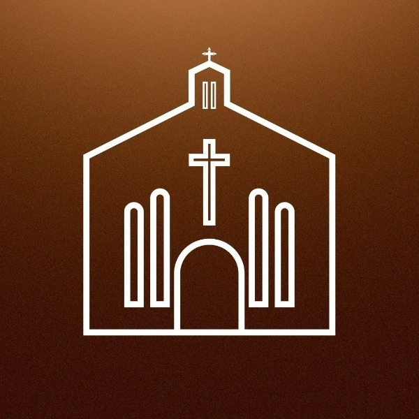

Comunidade
Santo Antônio
Bacabal · MA
Paróquia de Sant'Ana e São Joaquim
Confissão
Exame de Consciência
Prepare-se para uma boa confissão
Novenas
Novena de Santo Antônio
Nove dias com o nosso padroeiro
Novena para Namorados
Rezar juntos o caminho do amor
Novena para Noivos
Preparação para o matrimônio
Novena para Esposos
Pela família e pelo casamento
Fale conosco
WhatsApp
Informações, horários e pedidos
Como chegar
Rua Dias Carneiro, 2117 · Bacabal